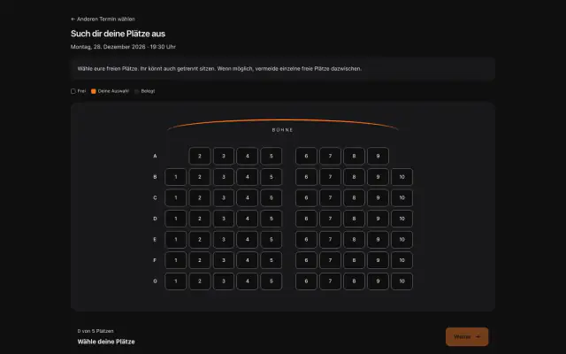

Ein Theater, ganz viele Tabs.
Für das Kolpingtheater Ramsen baue ich seit 2020 Websites, Werkzeuge und inzwischen auch ein Spiel.

Probestück braucht JavaScript
Nachbau Dieselben 68 Plätze wie im echten Saal. Gebucht wird hier nichts.
Die aktuelle Website kann mehr als Programm und Fotos: Man bucht dort Plätze direkt im Saalplan, bekommt ein QR-Ticket, einen Kalendereintrag und inzwischen auch ein Ticket für Google Wallet.
Den Saalplan hier habe ich für diese Seite nachgebaut: dieselben Reihen, derselbe Gang in der Mitte, dieselbe Warnung, wenn zwischen zwei Buchungen ein einzelner Platz frei bliebe.
Drumherum ist ein ganzes Universum entstanden: ein Drehbuch-System für die Proben, eine Videozuspielung für das Stück „Nexus“, eine Flutter-App mit Terminen und Rollen. Und „Rampenlicht“, ein Online-Kartenspiel mit den Theatermitgliedern als Karten. Angefangen hat es 2020 mit einer Theaterseite in meinem ersten Portfolio.
Auf der Bühne: Bote / Diener. Hinter der Bühne: Website.